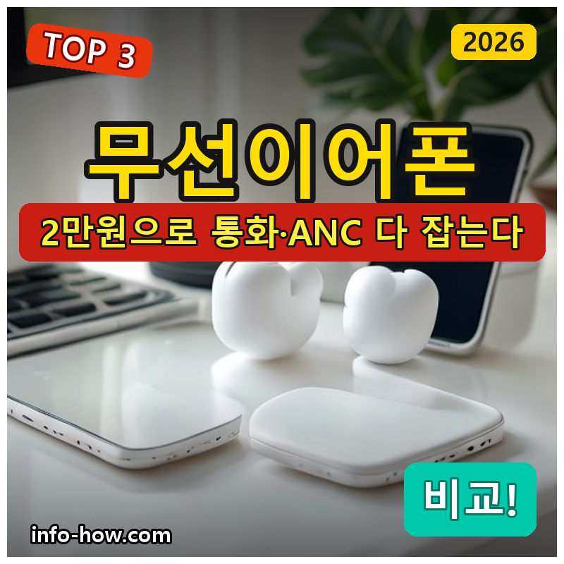
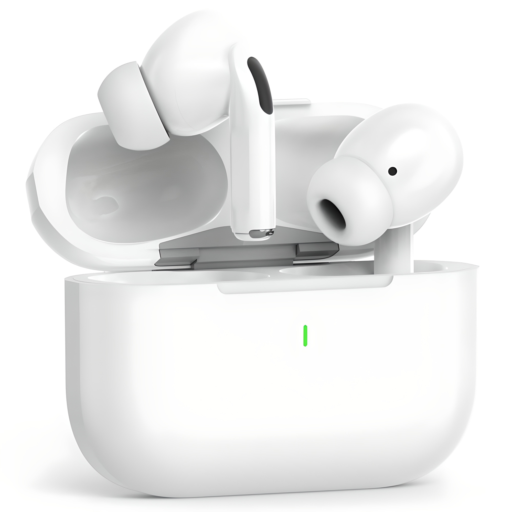
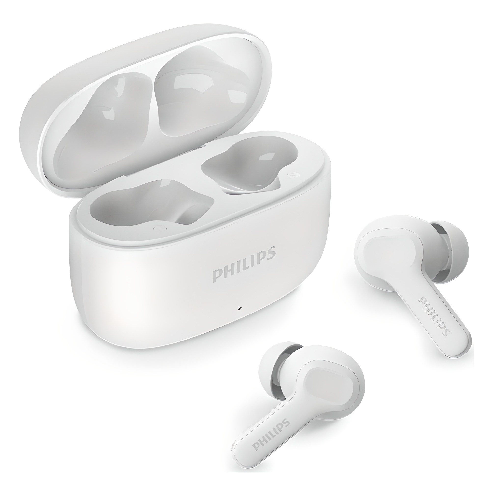
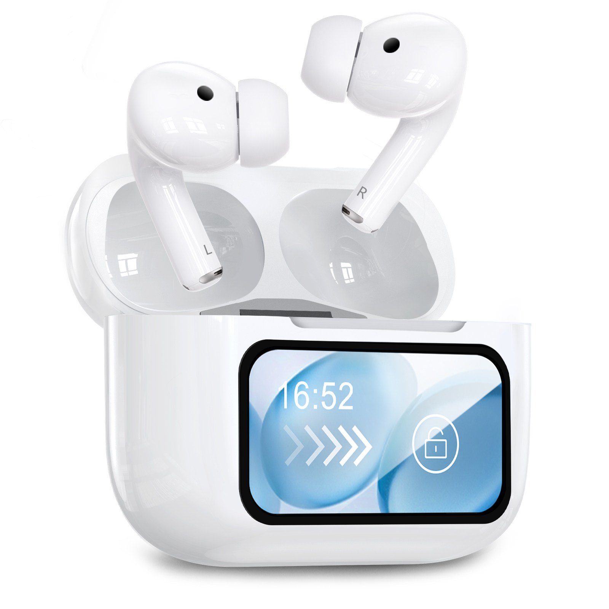

홈 › 제품리뷰 › 디지털/IT
가성비 무선이어폰, 통화용이냐 노이즈캔슬링이냐
작성: 생활서식 모음 · 2026-07-11

파트너스 활동의 일환으로 일정액의 수수료를 지급받습니다
🛒 오늘의 쿠팡 특가 보러가기 →
무선이어폰, 꼭 비싼 걸 사야 할까요?
핵심은 "통화 품질이냐, 노이즈캔슬링이냐" 3대 를
"일단 저렴하게" "통화가 잘 돼야" "지하철 소음 차단"용도별 정답 까지 담았으니
📋 목차
가성비 무선이어폰, 통화용이냐 노이즈캔슬링이냐 — 결론 먼저 스펙 비교표: 한눈에 보기 가성비 무선이어폰 고를 때 봐야 할 4가지 통화냐 소음차단이냐, 뭘 사야 할까? 자주 묻는 질문 (FAQ) 결론: 한 줄 요약
가성비 무선이어폰, 통화용이냐 노이즈캔슬링이냐 — 결론 먼저
가성비 무선이어폰은 "통화가 중요하냐, 소음 차단이 중요하냐" 로 갈려요.필립스 ENC 처럼 통화 잡음 제거가 되는 제품이 무난합니다. 일단 저렴하게 쓸 거면 1만원대 입문, 지하철·버스 소음을 막고 싶으면 ANC(노이즈캔슬링) 제품입니다.
1 입문·서브용 (가성비 초이스)
가성비

1만원대 커널형 입문
1. 어반사운드 에어 프로 무선 이어폰
1만원대 커널형 무선 일단 무선 경험용으로 딱 분실·서브용 부담 없는 가격
고급 기능은 없지만
추천 대상
무선이어폰을 처음 저렴하게 써볼 분 운동·집안일용 서브 이어폰이 필요한 분 분실 걱정 없이 막 쓸 제품을 원하는 분 장점
1만원대로 무선이어폰을 부담 없이 경험할 수 있음 커널형이라 귀에 어느 정도 밀착돼 기본 차음이 됨 로켓배송이라 빠르게 받아 바로 사용 단점
통화 잡음 제거(ENC)·노이즈캔슬링(ANC) 같은 고급 기능은 없음 이 제품은 입문·서브용 입니다. 통화 품질이 중요하면 2번 필립스 ENC, 소음 차단이 중요하면 3번 ANC로 가세요. "일단 무선"이면 가성비 최고입니다.
한줄 리뷰
"무선이어폰이 필요한데 비싼 건 부담"일 때 딱입니다. 음질·기능을 크게 기대하진 마시고, 서브·운동·경험용으로 접근하면 만족스러워요. 통화·소음차단이 목적이면 2·3번을 보세요.
주요 스펙
제품: 어반사운드 에어 프로 커널형 블루투스 이어폰 형태: 커널형(인이어) 급: 입문·서브용 배송: 로켓배송 가격: 약 12,900원 (변동 가능) ※ 실제 스펙·가격과 차이가 있을 수 있습니다
2 통화·업무 (베스트 초이스)
베스트

ENC 통화 잡음 제거
2. 필립스 ENC 노이즈캔슬링 이어폰
ENC = 통화 시 주변 잡음 제거 필립스 브랜드 안정성 2만원 안팎 통화 특화
전화 상대가 내 목소리를 또렷하게
추천 대상
업무 전화·통화가 잦은 분 카페·길거리에서 통화가 많은 분 브랜드 안정성을 중시하는 분 장점
ENC(통화 노이즈캔슬링)로 통화 시 주변 잡음을 걸러 상대가 목소리를 또렷하게 들음 필립스 브랜드라 연결 안정성·기본기가 무난 2만원 안팎으로 통화 특화 기능을 갖춘 가성비 단점
ENC는 "통화" 잡음 제거라, 내 귀로 듣는 음악 소음 차단(ANC)과는 다름 ENC와 ANC를 헷갈리기 쉬운데, ENC=상대가 듣는 내 통화 잡음 제거, ANC=내가 듣는 주변 소음 차단 입니다. 지하철 소음을 막고 싶으면 3번 ANC로 가세요.
한줄 리뷰
통화가 잦은 분에게 2만원 안팎에서 가장 실속 있는 선택입니다. ENC 덕에 통화 품질이 확실히 낫고 필립스라 안정적이에요. 단, "음악 들을 때 주변 소음 차단"이 목적이면 ENC가 아니라 3번 ANC입니다.
주요 스펙
제품: 필립스 ENC 노이즈캔슬링 블루투스 이어폰 기능: ENC(통화 노이즈캔슬링) 강점: 통화 품질·브랜드 안정성 배송: 로켓배송 가격: 약 19,900원 (변동 가능) ※ 실제 스펙·가격과 차이가 있을 수 있습니다
3 지하철·소음 차단 (ANC 초이스)
노이즈캔슬링

ANC + 디스플레이
3. OMIIYA ANC 무선 이어폰
ANC = 주변 소음 능동 차단 충전 케이스 터치 디스플레이 2만원대 노이즈캔슬링 가성비
지하철·버스 소음을 눌러주는
추천 대상
지하철·버스 등 소음 환경에서 음악·영상 보는 분 주변 소음을 눌러 몰입하고 싶은 분 충전 케이스 디스플레이 같은 기능을 원하는 분 장점
ANC(액티브 노이즈캔슬링)로 지하철·버스 저음 소음을 능동적으로 줄여줌 충전 케이스에 터치 디스플레이가 있어 배터리·조작 확인이 편함 2만원대에서 ANC를 갖춘 가성비 구성 단점
저가 ANC라 고가 프리미엄만큼의 완벽한 차음은 기대하기 어려움 통화가 주목적이면 2번 ENC가 맞고, 일단 저렴하게면 1번입니다. 3번은 "내가 듣는 주변 소음 차단(ANC)" 이 목적일 때 — 2만원대에서 그 기능을 원하는 분에게 가성비가 좋습니다.
한줄 리뷰
"지하철에서 이어폰 껴도 시끄럽다"는 분에게 2만원대 ANC는 체감이 큽니다. 고가 프리미엄만큼은 아니어도 저음 소음을 확실히 눌러줘요. 통화 위주면 2번, 경험·서브면 1번이 맞습니다.
주요 스펙
제품: OMIIYA ANC 무선 블루투스 이어폰(커널형) 기능: ANC(액티브 노이즈캔슬링) · 케이스 디스플레이 강점: 주변 소음 차단 배송: 로켓배송 가격: 약 21,900원 (변동 가능) ※ 실제 스펙·가격과 차이가 있을 수 있습니다
스펙 비교표: 한눈에 보기
가격·풍량·무게 중 본인에게 중요한 기준부터 보세요. "최고" 표시는 3제품 중 객관적 1위 값입니다.
← 좌우로 스크롤 →
가성비 무선이어폰 고를 때 봐야 할 4가지
싼 이어폰이라도 이 4가지만 보면 "돈 아깝다" 소리는 안 나옵니다.
1) ENC vs ANC — 가장 많이 헷갈리는 것
ENC: "통화" 시 상대가 듣는 내 목소리 잡음 제거 → 통화 잦으면ANC: "내가" 듣는 주변 소음 능동 차단 → 지하철·버스 소음둘은 목적이 다름 — 통화면 ENC, 소음차단이면 ANC 2) 착용감 — 커널형 vs 오픈형
커널형(인이어): 귀에 밀착돼 차음·저음 좋음, 이물감 있을 수 있음오픈형: 개방감·편안함, 대신 소음 차단·저음은 약함오래 착용하면 귀 모양과의 궁합이 중요 3) 배터리·충전 — 케이스 포함 사용시간
이어폰 단독 사용시간 + 케이스로 몇 회 충전되는지 함께 볼 것 C타입 충전·무선충전 지원 여부 확인 표기 시간은 최대 볼륨 기준이 아닌 경우가 많음 4) 연결·지연 — 블루투스 버전·코덱
블루투스 버전이 높을수록 연결 안정성이 유리 영상·게임을 본다면 지연(레이턴시)이 적은 제품이 좋음 멀티포인트(2기기 동시연결) 지원이면 편의성 상승 통화냐 소음차단이냐, 뭘 사야 할까?
용도만 정하면 답이 나옵니다.
일단 저렴하게·서브: 1번 어반사운드 → 1만원대 입문통화·업무 잦음: 2번 필립스 ENC → 통화 특화지하철·소음 차단: 3번 OMIIYA ANC → 노이즈캔슬링자주 묻는 질문 (FAQ)
Q1. ENC랑 ANC가 뭐가 다른가요? 적용 대상이 다릅니다. ENC는 통화할 때 "상대방이 듣는 내 목소리"에서 주변 잡음을 걸러주는 기능이라 통화 품질에 관여합니다. ANC는 "내가 듣는" 주변 소음을 능동적으로 상쇄해 음악·영상 몰입도를 높이는 기능입니다. 통화가 잦으면 ENC, 지하철·버스 소음을 막고 싶으면 ANC를 고르세요. 둘 다 필요하면 두 기능을 모두 지원하는 제품을 봐야 합니다.
Q2. 2만원짜리 이어폰, 음질이 쓸 만한가요? "가격을 감안하면" 쓸 만합니다. 10만원대 프리미엄과 음질을 직접 비교하면 차이가 있지만, 출퇴근·통화·영상 시청 같은 일상 용도에는 충분한 수준입니다. 다만 음악 감상이 최우선이고 음질에 민감하다면 더 상위 제품을 고려하는 게 맞습니다. 이 가격대는 "가성비·서브·특정 기능(ENC/ANC)"이 목적일 때 만족도가 높습니다.
Q3. 커널형은 귀가 아프다는데 괜찮을까요? 개인차가 있습니다. 커널형은 귀에 밀착돼 차음과 저음이 좋은 대신, 오래 끼면 이물감이나 압박감을 느끼는 분도 있습니다. 보통 여러 크기의 이어팁이 동봉돼 귀에 맞는 크기로 바꾸면 상당히 개선됩니다. 압박감이 심하게 불편하면 오픈형(개방형)을 고려하는 것도 방법이지만, 그 경우 소음 차단·저음은 약해집니다.
Q4. 무선이어폰 배터리 표기 시간이 실제랑 다른 이유는? 표기 시간은 보통 중간 볼륨·특정 조건 기준이기 때문입니다. 볼륨을 키우거나 ANC를 켜면 소모가 늘어 실제 사용시간은 표기보다 짧아집니다. 그래서 이어폰 단독 사용시간뿐 아니라 "충전 케이스로 몇 회 더 충전되는지"를 함께 보는 게 현실적입니다. 하루 종일 쓴다면 케이스 포함 총 사용시간이 넉넉한 제품이 편합니다.
Q5. 아이폰/안드로이드 상관없이 다 되나요? 블루투스 표준이라 기본 연결·통화·음악은 기기 상관없이 됩니다. 다만 일부 고급 코덱(예: 특정 고음질 코덱)은 기기·이어폰이 모두 지원해야 작동하고, 전용 앱 기능은 OS에 따라 제한될 수 있습니다. 이 가격대 제품은 대부분 기본 기능 위주라 아이폰·안드로이드 모두 무난히 쓸 수 있습니다.
결론: 한 줄 요약
1) 어반사운드 에어 프로 — 약 12,900원 / 입문·서브. 1만원대로 무선 경험, 부담 없는 가성비.2) 필립스 ENC — 약 19,900원 / 통화·업무. 통화 잡음 제거, 전화 잦으면 이것.3) OMIIYA ANC — 약 21,900원 / 지하철·소음차단. 2만원대 노이즈캔슬링 가성비.이 포스팅은 쿠팡 파트너스 활동의 일환으로, 이에 따른 일정액의 수수료를 제공받습니다.